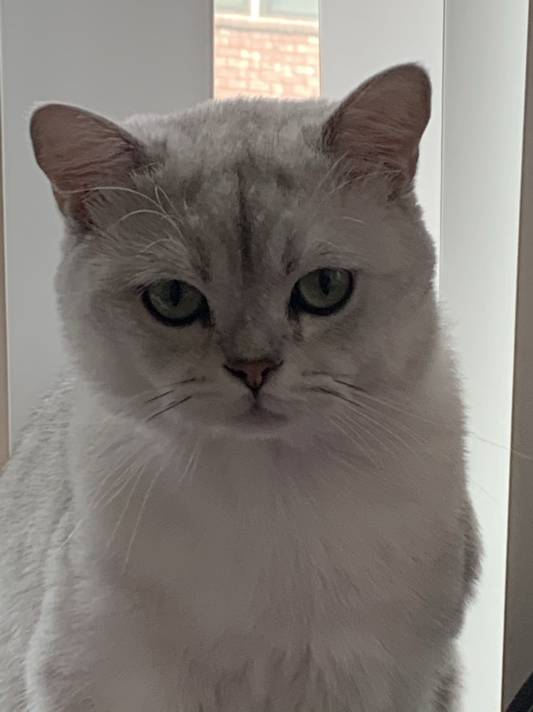
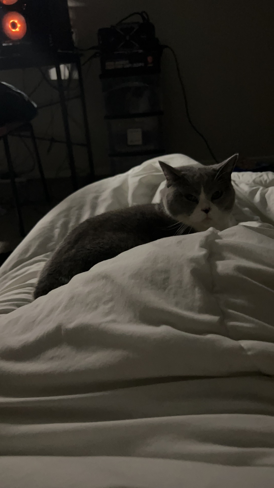
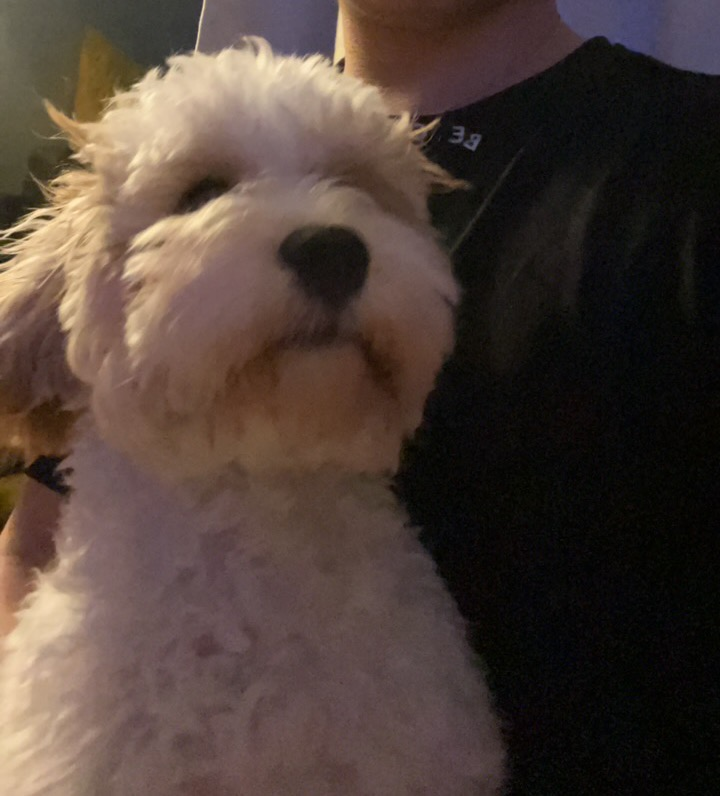
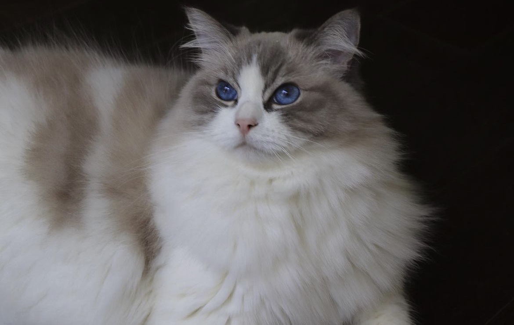

Pets
NUONUO: The British Longhair Kitten

Nuonuo is a cute Golden Shaded British Longhair kitten. He is only 4 months old.
Nuonuo is a cute 4-month-old British Longhair kitten. She's got long, fluffy fur that's a mix of soft colors, making her look super adorable. Nuonuo is playful and curious, always exploring and getting into little kitty adventures. She's still a tiny kitten, but she's growing fast and becoming a beloved member of the family.
One thing about Nuonuo is that she loves to chase after things, like strings or little toy mice. She's got so much energy, and it's fun to watch her play. When she's not pouncing around, you can often find her cuddled up somewhere warm, taking a sweet catnap. Nuonuo's a little bundle of joy, bringing smiles and laughter to everyone around her.

Likes
- Sleep
- Curl Up
- Play Around
DIANDIAN: The British Shorthair Cat
DianDian is a 4yr old British Shorthair cat. He is a lazy British shorthair cat who likes to eat and sleep.
Diandian, the British Shorthair cat, is a handsome and friendly male cat. He has a striking gray coat and a round face that gives him an adorable look. Diandian is soft to touch because of his thick fur, and he has big, inquisitive eyes that capture your attention. He's a bit chubby, which adds to his charm. Diandian is a sweet and easygoing cat, perfect for families or people who want a calm and affectionate pet. Whether he's napping in the sun or playing around, he's a cherished part of the family, bringing happiness to everyone around him.
Diandian, the British Shorthair cat, is a friendly male who really loves fish flakes as his favorite snack. Whenever he hears the sound of a treat bag or the opening of a fish flake container, he gets all excited. Watching him enjoy those fishy snacks is a heartwarming sight, and it's obvious that his love for fish flakes makes him even more lovable.
Likes
- Sleep
- Eat
- Play Around
POP: The Other British Shorthair Cat
Pop is a 3yr old British Shorthair cat. She is a blue and white cat who loves her owner Cody.
Pop is a cute blue and white British Shorthair girl cat. She's got soft fur with a mix of blue and white colors that make her look adorable. Pop is a sweet and playful kitty, always ready for some fun. She's a cherished part of the family, bringing joy to everyone around her with her playful antics and friendly purrs.
Pop enjoys taking long naps on a comfy blanket or snuggling up amidst a bunch of plush toys. It's her favorite way to relax and recharge, and she looks so cozy and content when she does it. Whether she's on the blanket or surrounded by plushies, she's a happy and relaxed kitty.
Likes
- Sleep
- Eat
- Play Around
MOCHA: The Spanish Water Dog
Mocha is a 8 months old dog. He has soft and curly hair in orange and white.
Mocha is an energetic 8-month-old Spanish Water Dog. With her curly orange coat, she's a lively and spirited pup. Mocha's always on the move, ready for a game of fetch or a playful run in the park. She's full of enthusiasm and brings a lot of happiness to her family with her lively antics.
One thing about Mocha is her love for water. She can't resist jumping into puddles or splashing around in a river. It's no surprise, given her breed! When she's not getting wet, she's a loyal and loving companion, always eager to give warm cuddles and wagging her tail with excitement. Mocha is a true bundle of joy in every sense.
Likes
- Chase a Ball
- Lick Human
- Eat
RIVERCRAB: The Ragdoll
Mocha is a 3yr old Ragdoll cat. He has really long hair and beautiful blue eyes.
Rivercrab is a calm and gentle 3-year-old Ragdoll cat. With his soft, fluffy fur and striking blue eyes, he's a real beauty. He enjoys lounging around the house, often found perched by a sunny window or curled up in a cozy corner. Rivercrab's a creature of comfort and brings a sense of tranquility to his home.
When he's in the mood for some playtime, Rivercrab's favorite game is chasing after feathers or batting at dangling strings. He may be laid-back, but he's not one to pass up on a good play session. Rivercrab's loving and affectionate, always ready to purr and nuzzle his way into the hearts of his family.
Likes
- Chase After Feather
- Sleep
- Eat